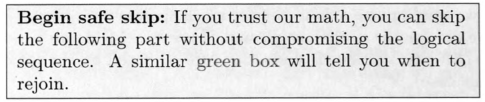

layout: true <div class="my-header"> <p class="align_left"><img src="images/yonsei_logo.png" style="height: 30px;"/></p> <p class="align_right"><b>LFD Chapter 2 - Part 1</b></p> </div> <div class="my-footer"> <p class="align_right"><b>2022.02.14 ML Study</b></p> <p class="align_left"><b>Tae Geun Kim</b></p> </div> --- class: center, middle # Theory of Generalization <h4 style="color:brown">LFD Chapter 2 - Part 1</h4> <h3 style="color: darkblue">Tae Geun Kim</h3> --- ## Table of Contents -- * Training vs Testing -- * Generalization Error -- * Effective Number of Hypothesis -- * <u>Bounding the Growth function</u> -- * <s>The VC Dimension</s> -- * <s>The VC Generalization Bound</s> --- class: center, middle # Training vs Testing --- ### Final Exam .center[ <div id="boxshadow" style="width:100%;margin:0 auto;"> <figcaption style="text-align:center";><b>Fig.1</b> Final Exam</figcaption> </div> ] --- class: split-40 ### Final Exam .left-column[ .center[ <div id="boxshadow" style="width:90%;margin:0 auto;"> <figcaption style="text-align:center";><b>Fig.2</b> P&S</figcaption> </div> ] ] .right-column[ * Before the final exam, a professor may hand out some practice problems and solutions to the class. ] -- .right-column[ * Although these problems are not the exact ones that will appear on the exam, studying them will help you do better. ] -- .right-column[ * They are the **training set** in your learning. ] --- ### Final Exam **Q. If the professor's goal is to help you do better in the exam, why not give out the exam problems themselves?** -- * Doing well in the exam is not the goal in and of itself. * The goal is for you to learn the course material. * The exam is merely a way to gauge how well you have learned the material. * If the exam problems are known ahead of time, your performance on them will no longer accurately gauge how well you have learned. -- * The same distinction between training and testing happens in learning from data. * In chapter 2, we will develop a mathematical theory that characterizes this distinction. --- class: center, middle # Generalization Error --- ### Generalization Error 1. **Out-of-sample Error** -- * $E_\text{out}$ measures how well our training on $\mathcal{D}$ has *generalized* to data that we have not seen before. -- * $E_\text{out}$ is based on the performance over the entire input space $\mathcal{X}$. -- 2. **In-sample Error** -- * $E_\text{in}$ is based on data points that have been used for training. -- * It expressly measures training performance, but may not reflect the ultimate performance in a real test. -- $\Rightarrow$ $E\_\text{in}$ does not always generalize to a similar value of $E\_\text{out}$. --- ### Generalization Error We have already seen that *Generalization* is a key issue in learning. -- **Q. How to define the generalization error?** -- * One can define the *generalization error* as the discrepancy between $E\_\text{in}$ and $E\_\text{out}$. -- * The **Hoeffding Inequality** provides a way to characterize the generalization error with a probabilistic bound. $$ \mathbb{P}[|E\_\text{in}(g) - E\_\text{out}(g)| > \epsilon] \leq 2Me^{-2\epsilon^2 N} $$ -- * Let rephrase the inequality to provide a bound of $E_\text{out}(g)$. --- ### Hoeffding Inequality Revisited Start with let the RHS of the inequality be $\delta$. $$ \begin{aligned} &\mathbb{P}[|E\_\text{in}(g) - E\_\text{out}(g)| > \epsilon] \leq 2Me^{-2\epsilon^2 N} \equiv \delta \\\\ \Rightarrow~&\mathbb{P}[E\_\text{out}(g) < E\_\text{in}(g) - \epsilon~\text{ or }~E\_\text{out}(g) > E\_\text{in}(g) + \epsilon] \leq \delta \\\\ \Rightarrow~&\mathbb{P}[E\_\text{in}(g)-\epsilon \leq E\_\text{out}(g) \leq E\_\text{in}(g) + \epsilon] \geq 1- \delta \\\\ \Rightarrow~&\mathbb{P}[E\_\text{out}(g) \leq E\_\text{in}(g) + \epsilon] \geq 1- \delta \\\\ \end{aligned} $$ -- Since $\delta = 2Me^{-2\epsilon^2 N}$, we can rewrite $\epsilon$ with function of $\delta$. -- $$ \epsilon =\sqrt{\frac{1}{2N} \ln \frac{2M}{\delta}} $$ -- Thus, we can pick a tolerance level $\delta$ and assert with probability at least $1-\delta$ that $$ E\_\text{out}(g) \leq E\_\text{in}(g) +\sqrt{\frac{1}{2N} \ln \frac{2M}{\delta}} $$ --- ### Hoeffding Inequality Revisited **Q. Why do we choose upper bound only?** -- * The upper bound becomes tighter as decreasing $E\_\text{in}(h)$, but the lower bound is not. -- The error bound $\displaystyle \sqrt{\frac{1}{2N}\ln\frac{2M}{\delta}}$ depends on $M$, the size of the hypothesis set $\mathcal{H}$. -- * If $\mathcal{H}$ is an infinite set, the bound goes to infinity and becomes meaningless. -- * Unfortunately, almost all interesting learning models have infinite $\mathcal{H}$. -- * For example, the simple perceptron with we discussed in [Chapter 1](../chap1/LD_chap1_part1.html#27). -- * In order to study generalization in such model, we should replace $M$ with something finite. --- class: split-40 ### Overlapping Let $\mathcal{B}\_m$ to be the ($\mathcal{B}$ad) event that $|E\_\text{in}(h\_m) - E\_\text{out}(h\_m)| > \epsilon$. -- Then for the Hoeffding Bound, we used below inequality. $$ \mathbb{P}[\mathcal{B}\_1~\text{ or }~\cdots~\text{ or }\~\mathcal{B}\_M] \leq \mathbb{P}[\mathcal{B}\_1] + \cdots + \mathbb{P}[\mathcal{B}\_M] $$ -- .left-column[ .center[ <div id="boxshadow" style="width:90%;margin:0 auto;"> <figcaption style="text-align:center";><b>Fig.3</b> Strongly Overlap</figcaption> </div> ] ] .right-column[ * If the events $\mathcal{B}\_1,\,\cdots,\,\mathcal{B}\_M$ are strongly overlapping, the union bound says the total area is much smaller than the sum of the individual bounds. ] -- .right-column[ * In a typical learning model, many hypothesis are indeed very similar. ] -- .right-column[ * For simple perceptron, as you slowly vary the weights, you get infinitely many hypotheses that differ from each other only infinitesimally. ] -- .left-column[ **If we account for the overlaps, we will be able to replace $M$.** ] --- class: center, middle # Effective Number of Hypothesis --- ### The Blueprint We now introduce the *growth function*, the quantity that will formalize the effective number of hypothesis. -- Our steps to defining the effective number of hypothesis are: -- 1. Define the growth function and study its basic properties. -- 2. Show that how we can bound the value of the growth function. -- 3. Show that we can replace $M$ in the generalization bound with the growth function. -- Without loss of generality, we will focus on binary target functions for the purpose of this analysis, so each $h\in\mathcal{H}$ maps $\mathcal{X}$ to $\\{-1,+1\\}$. --- ### Growth function .center[ <div class="animated-border-quote" style="width:100%"> <blockquote style="width:90%"> <p style="text-align:center"><b>Definition 2.1</b></p> <p style="text-align:left"> Let $\mathbf{x}_1,\,\cdots,\,\mathbf{x}_N\in\mathcal{X}$. The <i>dichotomies</i> generated by $\mathcal{H}$ on these points are defined as follows. $$ \mathcal{H}(\mathbf{x}_1,\,\cdots,\,\mathbf{x}_N) = \{(h(\mathbf{x}_1),\,\cdots,\,h(\mathbf{x}_N))\,|\,h\in\mathcal{H}\} $$ </p> </blockquote> </div> ] -- .center[ <div class="animated-border-quote" style="width:100%"> <blockquote style="width:90%"> <p style="text-align:center"><b>Definition 2.2</b></p> <p style="text-align:left"> The <i>growth function</i> is defined for a hypothesis set $\mathcal{H}$ by $$ m_\mathcal{H}(N) = \underset{\mathbf{x}_1,\cdots,\mathbf{x}_N \in \mathcal{X}}{\max} |\mathcal{H}(\mathbf{x}_1,\,\cdots,\,\mathbf{x}_N)| $$ where $|\cdot|$ denotes the cardinality (number of elements) of a set. </p> </blockquote> </div> ] --- ### Growth function * In words, $m\_\mathcal{H}(N)$ is the maximum number of dichotomies that can be generated by $\mathcal{H}$ on any $N$ points. -- * To compute $m\_\mathcal{H}(N)$, consider all possible choices of $N$ points $\mathbf{x}\_1,\,\cdots,\,\mathbf{x}\_N$ from $\mathcal{X}$ and pick the one that generates the largest number of dichotomies. -- * Like $M$, $m\_\mathcal{H}(N)$ is a measure of the number of hypotheses in $\mathcal{H}$, except that a hypothesis is now considered on $N$ points instead of the entire $\mathcal{X}$. -- * For any $\mathcal{H}$ in our case, below inequality should be satisfied. $$ m\_\mathcal{H}(N) \leq 2^N $$ -- * If $\mathcal{H}$ is capable of generating all possible dichotomies on $\mathbf{x}\_1,\,\cdots,\,\mathbf{x}\_N$, then $$\mathcal{H}(\mathbf{x}\_1,\,\cdots,\,\mathbf{x}\_N) = \\{-1,+1\\}^N \,\Rightarrow\, m\_\mathcal{H}(N) = 2^N$$ We say that $\mathcal{H}$ can *shatter* $\mathbf{x}\_1\,\cdots,\,\mathbf{x}\_N$. --- ### Growth function **Q. How to compute the growth function for 2D perceptron?** .center[ <div id="boxshadow" style="width:100%;margin:0 auto;"> <figcaption style="text-align:center";><b>Fig.4</b> Growth function for 2D perceptron</figcaption> </div> ] -- * For 3-points case $(N=3)$, the growth function is $m\_\mathcal{H}(3) = 2^3 = 8$. -- * For 4-points case $(N=4)$, the growth function is $m\_\mathcal{H}(4) = 2^4 - 2 = 14$. --- ### Growth function .center[ <div class="animated-border-quote" style="width:100%"> <blockquote style="width:90%"> <p style="text-align:center"><b>Example 2.2</b></p> <p style="text-align:left"> Find a formula for $m_\mathcal{H}(N)$ in each of the following cases: <ol> <li> Positive rays : $$ \small h:\mathbb{R} \rightarrow \{-1,+1\} ~\text{ such that }~h(x) = \text{sign}(x-a) $$ </li> <li> Positive intervals : $$ \small h:\mathbb{R} \rightarrow \{-1,+1\} ~\text{ return $+1$ with some interval and $-1$ otherwise.} $$ </li> <li> Convex sets : $$ \small h:\mathbb{R}^2 \rightarrow \{-1,+1\} ~\text{ are positive inside some convex set and negative elsewhere.} $$ </li> </ol> </p> </blockquote> </div> ] --- ### Growth function **1. Positive rays** .center[ ] -- $$ m_\mathcal{H}(N) = \begin{pmatrix}N+1 \\\\ 1\end{pmatrix} = N+1 $$ --- ### Growth function **2. Positive intervals** .center[ ] -- $$ m_\mathcal{H}(N) = \begin{pmatrix}N+1 \\\\ 2\end{pmatrix} + 1 = \frac{1}{2}N^2 + \frac{1}{2}N + 1 $$ --- class: split-40 ### Growth function **3. Convex sets** .left-column[ .center[ ] ] -- .right-column[ $$ m_\mathcal{H}(N) = 2^N $$ ] -- .right-column[ * But it is not practical to try to compute $m\_\mathcal{H}(N)$ for every hypothesis set we use. ] -- .right-column[ * Fortunately, we do not have to. ] -- .right-column[ * Since we can use an upper bound on $m\_\mathcal{H}(N)$ instead of the exact value. ] --- ### Break point .center[ <div class="animated-border-quote" style="width:100%"> <blockquote style="width:90%"> <p><b>Definition 2.3</b></p> <p style="text-align:left"> If no data set of size $k$ can be shattered by $\mathcal{H}$, then $k$ is said to be a break point of $\mathcal{H}$. </p> </blockquote> </div> ] -- * If $k$ is a break point, then $m\_\mathcal{H}(k) < 2^k$. -- * In general, it is easier to find a break point for $\mathcal{H}$ than to compute the full growth function for that $\mathcal{H}$. --- ### Break point .center[ <div class="animated-border-quote" style="width:100%"> <blockquote style="width:90%"> <p><b>Exercise 2.1</b></p> <p style="text-align:left"> By inspection, find a break point $k$ for each hypothesis set in Example 2.2 (if there is one). Verify that $m_\mathcal{H}(k) < 2^k$ using the formulas derived in that Example. </p> </blockquote> </div> ] -- 1. Positive rays : $k\geq2$ -- 2. Positive intervals : $k\geq3$ -- 3. Convex sets : None --- class: center, middle # Bounding the Growth Function --- ### Bounding the Growth function .center[ <div class="animated-border-quote" style="width:100%"> <blockquote style="width:90%"> <p style="text-align:left"> The most important fact about growth function is that if the condition $\small m_\mathcal{H}(N) = 2^N$ breaks at any point, we can bound $\small m_\mathcal{H}(N)$ for all values of $N$ by a simple polynomial based on this break point. </p> </blockquote> </div> ] -- * If $M$ can be replaced by $m\_\mathcal{H}(N)$, and $m\_\mathcal{H}(N)$ can be bounded by polynomial, $$ \sqrt{\frac{1}{2N}\ln \frac{2m\_\mathcal{H}(N)}{\delta}} \rightarrow 0 ~\text{ as }~N\rightarrow \infty $$ -- .center[  ] --- ### Homework .center[ <div class="animated-border-quote" style="width:100%"> <blockquote style="width:90%"> <p><b>Problem</b> 2.1, 2.2</p> </blockquote> </div> ] --- ### References * [Learning From Data](http://amlbook.com/), Yaser S. Abu-Mostafa, Malik Magdon-Ismail, and Hsuan-Tien Lin, AMLbook.com (2012) * [A Probabilistic Theory of Pattern Recognition](https://link.springer.com/book/10.1007/978-1-4612-0711-5), Luc Devroye, László Györfi and Gábor Lugosi, Springer (1996) --- class: center, middle # Thank you!